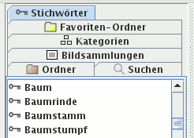
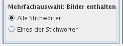

Im Kartenreiter Stichwörter werden alle Stichwörter angezeigt, die Sie Ihren Bildern zuordneten. Klicken Sie auf ein Stichwort, werden alle Bilder mit diesem Stichwort angezeigt.
Es gibt zwei Ansichten: Einen Baum (hierarchisch) und eine Liste (flach). Im Stichwortbaum auf der rechten Seite des Programmfensters können die Stichwörter bearbeitet werden, in der linken ausgewählt.
Der Stichwortbaum ist in einem anderen Dokument beschrieben.

Es gibt kein Kontextmenü für diese Ansicht.
Wählen Sie mehr als ein Stichwort aus, können Sie bestimmen, welche Bilder angezeigt werden durch Ankreuzen einer der Optionen unterhalb der Stichwortliste:

Es werden Bilder angezeigt, die alle ausgewählten Stichwörter enthalten. So finden Sie Bilder, auf denen ein Baum zu sehen ist und gleichzeitig der Himmel oder auf dem Ihr Freund Peter zu sehen ist zusammen mit Ihrer Freundin Sabine.
Es werden Bilder angezeigt, die eines oder mehrere der ausgewählten Stichwörter enthalten. Dies ist insbesondere sinnvoll, falls Sie das gleiche Stichwort unterschiedlich schrieben, beispielsweise einmal mit Bindestrich und einmal ohne.